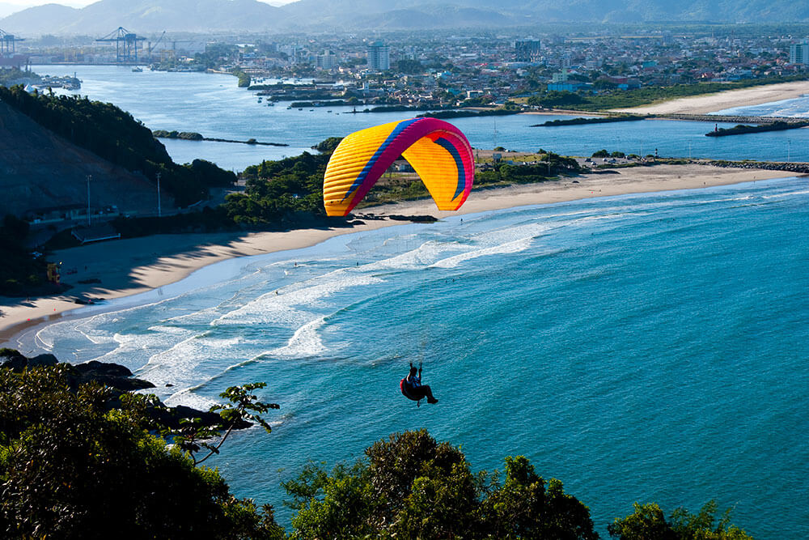
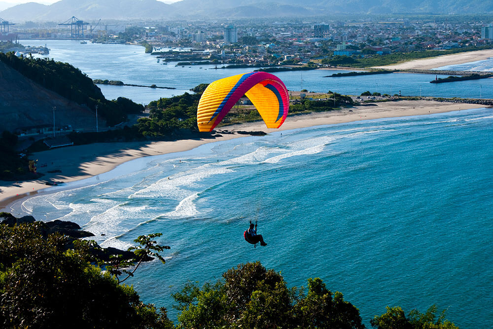
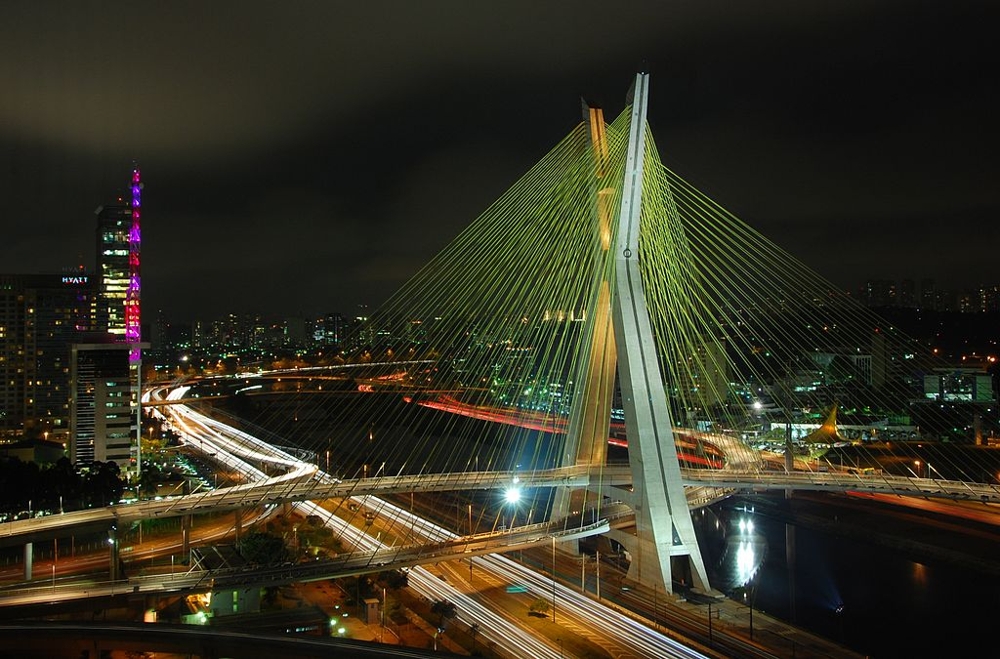
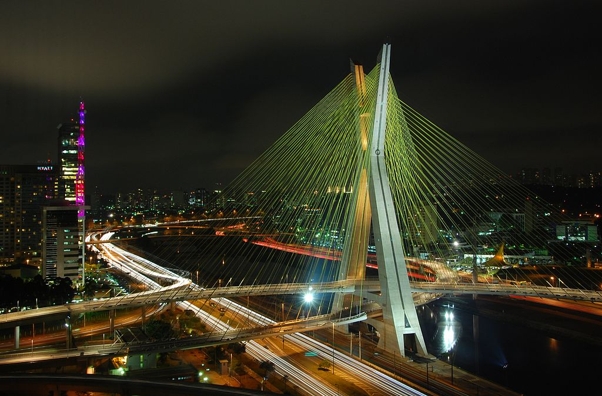
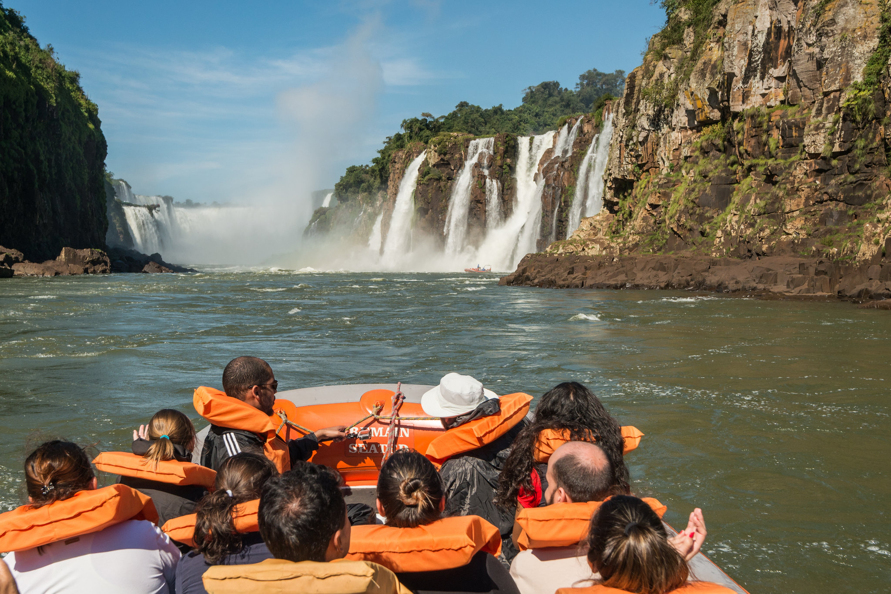
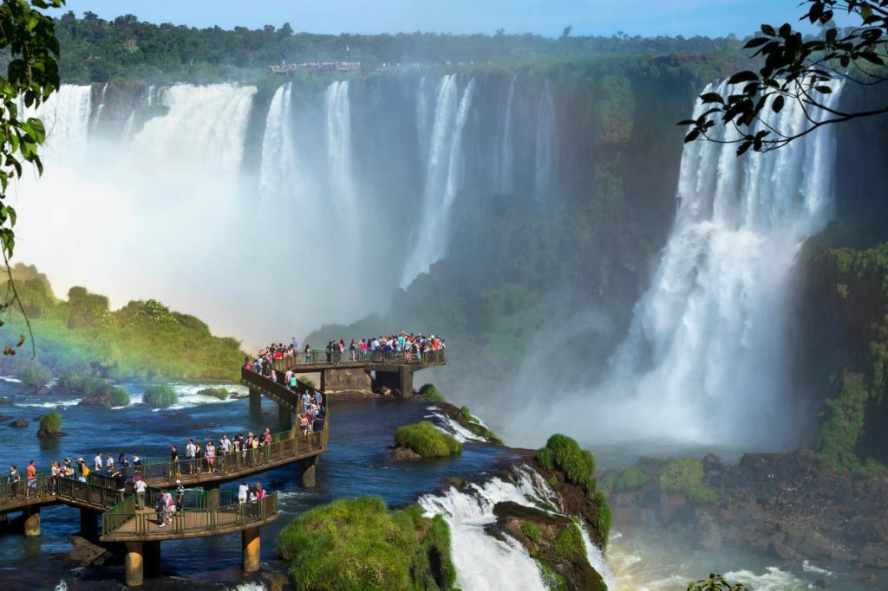
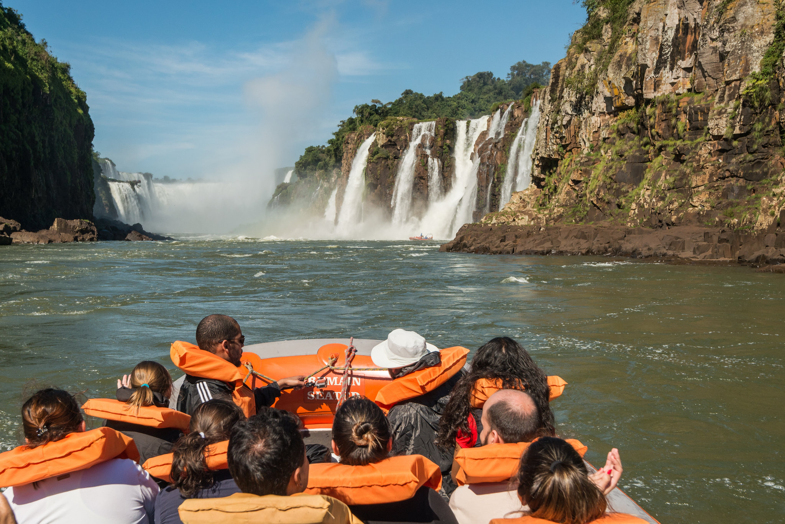
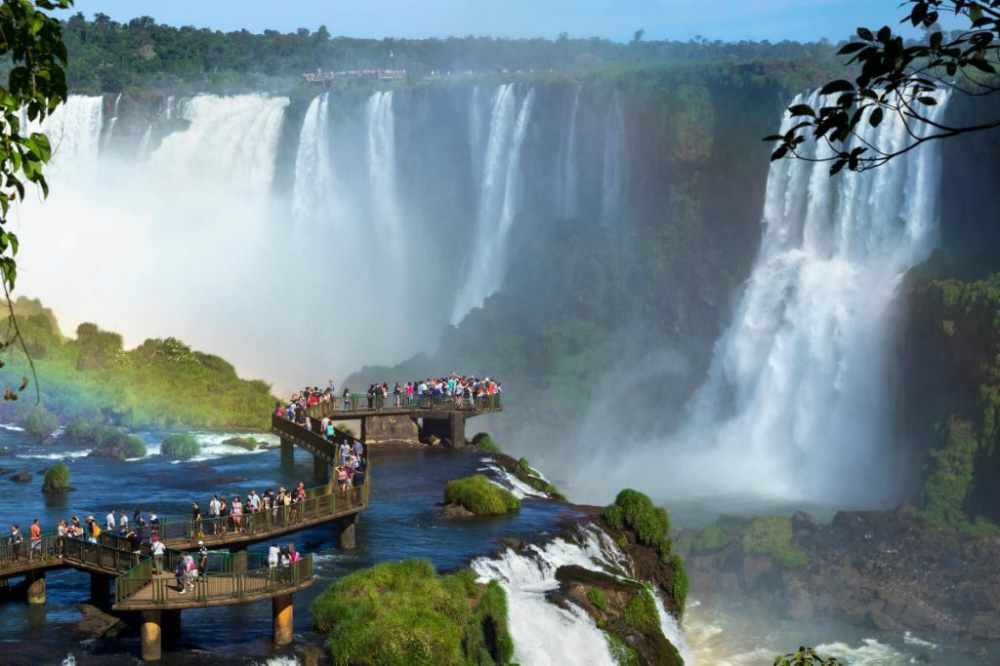

Viagens Virlei
Viagens feitas, virlei responsive site template
built by@gmail.comemail.com
Dicas de viagens
- Passeio na cidade de Goiânia
- Shopping Passeio das águas- em Goiânia
- Visitar as lojas no centro da cidade e Shopping
- Diversão no parque dentro do Shopping Passeio das Àguas
- Praça de alimentação com culinárias diversas e outras nações
- Passeio na cidade de Itajai
- Parque Mirante do Atalaia- em Itajai
- Visitar o porto e Marinha do Brasil
- Visitar Shopping e lojas no centro da cidade
- Fazer caminhadas em trilhas em meio a natureza
- Saltar de parapente com instrutores
- Fazer piquiniques e descansar com a familia
- Brincar nos balanços e escorregadores do parque
- Aproveitar a bela vista numa altitude 600 metros,com uso de telescópios
- Passeio na cidade de São Paulo
- Passeio e compras no bourbon-shopping-Sao-Paulo
- Passeio pela ponte estaiada Otávio Frias de Oliveira- em São Paulo
- Visita ao estádio de futebol- Morumbi-São Paulo
- Passeio Buenos Aires
- Visitas ao Casino-Buenos Aires-
- Visitas a lojas de vinhos e produtos alimentícios
- Passeio na praça central
- Passeio na cidade de Foz-do-Iguaçu
- Visitas a lojas em foz-do-Iguaçu e Cidade Del Este-Paraguay
- Visitas ao Parque nacional do Iguaçu
- Visitas as Cataratas-do-Iguaçu
- Visitas a Usína Hidrelétrica de Itaipú
cidades Visitadas
Goiânia


Descrição da Cidade
Goiânia é a capital do estado de Goiás, na região Centro-Oeste do Brasil. Foi oficialmente inaugurada em 1942, mas o governo estadual já estava implantado na cidade desde 1937. Paisagem do parque Vaca Brava, em Goiânia, a capital de Goiás. Goiânia é considerada a capital mais arborizada do Brasil....!!!
Itajai

 


Descrição da Cidade
Itajaí é um município brasileiro localizado no estado de Santa Catarina, na Região Sul do Brasil, distante 94 km da capital catarinense, Florianópolis. Tem uma população estimada em 219.536 habitantes , sendo uma cidade média, é o sexto município mais populoso do estado.Cidade de Itajai, situada litoral norte de Sc...!!!
São Paulo


 

Descrição da Cidade
A cidade de São Paulo é a capital do estado de mesmo nome e sede da Região Metropolitana de São Paulo. A capital paulista possui 12 milhões de habitantes, sendo a mais populosa do Brasil. Está inserida no bioma Mata Atlântica, tendo clima predominantemente Subtropical Úmido.14 de j
Bueno Aires


Descrição da Cidade
Buenos Aires é a capital da Argentina, um país da América do Sul. É uma das maiores cidades sul-americanas, um importante centro empresarial, político e cultural e também um dos mais importantes portos do mundo. Ela fica à beira do rio da Prata.
Foz do Iguaçu
 




Descrição da Cidade
Foz do Iguaçu está localizada no extremo oeste do Paraná, na divisa do Brasil com o Paraguai e a Argentina. A cidade é centro turístico e econômico do oeste do Paraná e é um dos mais importantes destinos turísticos brasileiros. Com cerca de 260 mil habitantes, Foz do Iguaçu é caracterizada por sua diversidade cultural.
Itens de Viagens
| Lojas | Mochila | Garrafa de água | Chapéu | Protetor Solar | Casaco de frio |
|---|---|---|---|---|---|
| Mercado Livre | 90,00 | 12,00 | 15,00 | 25,00 | 150,00 |
| Amazon | 100,00 | 15,00 | 25,00 | 39,00 | 290,00 |
| Shopee | 80,00 | 10,00 | 18,00 | 29,00 | 90,00 |